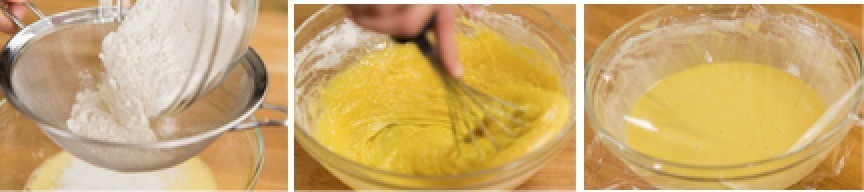

Doraemon's Dorayaki Recipe
Description
Dorayaki (どら焼き) is best described as a dessert with red bean filling between two slices of sweet fluffy pancakes. If you are familiar with Japanese cartoons from the ’70s, you probably know this dessert from the anime character Doraemon who is crazy about this snack and falls for any trap involving them.
The soft moist honey pancake with sweet red bean filling goes perfectly with warm and slightly bitter Japanese green tea. I am drooling just thinking about these tasty pancake snacks.

Ingredients
- 4 large eggs
- 140g sugar
- 2 Tbsp honey
- 1 1/3 cups all-purpose flour/ plain flour
- 1 tsp baking powder
- 1-2 Tbsp water
- neutral oil - for greasing the pan
- 520g sweet red bean paste
Steps
Before You Start
I highly encourage you to weigh your ingredients using a kitchen scale for this recipe. Click on the “Metric“ button at the top of the recipe to convert the ingredient measurements to metric. If you‘re using a cup measurement, please follow the “fluff and sprinkle“ method: Fluff your flour with a spoon, sprinkle the flour into your measuring cup, and level it off. Otherwise, you may scoop more flour than you need.
Gather all the ingredients.

To Make the Batter
- In a large bowl, combine 4 large eggs (50 g each w/o shell), 140 g sugar (⅔ cup + ½ Tbsp), and 2 Tbsp honey. Whisk well until the mixture becomes fluffy.
- Sift 160 g all-purpose flour (plain flour) and 1 tsp baking powder into the bowl with the egg mixture and mix until combined. Put the bowl in the refrigerator to rest the batter for 15 minutes.

- After resting, the batter should be relaxed and slightly smoother. Now, stir in half of the 1–2 Tbsp water and check the consistency. It should be similar to pancake batter. Add more of the water, as needed, until you achieve the right consistency. Depending on the size of the eggs and how accurate your flour measurement is, the water amount may vary.
To Cook the Honey Pancakes
- Heat a large nonstick frying pan over the lowest heat setting for 5 minutes. It‘s best to take your time and heat the pan slowly. When it is thoroughly heated with no hot spots, increase the heat to medium low. Dip a paper towel in neutral oil and coat the bottom of the pan with oil. Then, use another paper towel to remove the oil completely. This is the key to evenly golden brown Dorayaki pancakes. With a ladle or a small measuring cup (I use a 4 Tbsp measuring cup), pour 3 Tbsp of the batter from 3 inches (8 cm) above the pan to create a pancake that‘s 3 inches (8 cm) in diameter. Cook one pancake at a time.
- When you see the surface of the batter starting to bubble, flip the pancake over and cook the other side. (With my stove and frying pan, it takes 1 minute and 15–30 seconds to cook one side and 20–30 seconds for the other side.) When done, transfer it to a plate and cover it with a damp towel to prevent it from drying out. Grease the pan between batches, as needed. Continue making the rest of the pancakes; you can make about 12 pancakes.
To Assemble the Dorayaki
- Assemble the Dorayaki by making sandwiches using two pancakes and a scoop of the 520 g sweet red bean paste (anko) as filling. Put more red bean paste in the center of the pancakes so the sandwich‘s middle is thicker than the edges and the Dorayaki's overall shape is curved. Wrap the Dorayaki with plastic wrap until ready to serve.

To Store
- The leftovers can be wrapped in plastic and stored in a cool place for 2 days. They also can be put in a freezer bag and stored in the freezer for a month.
*Original Recipe Credit*
Click here to access original recipe